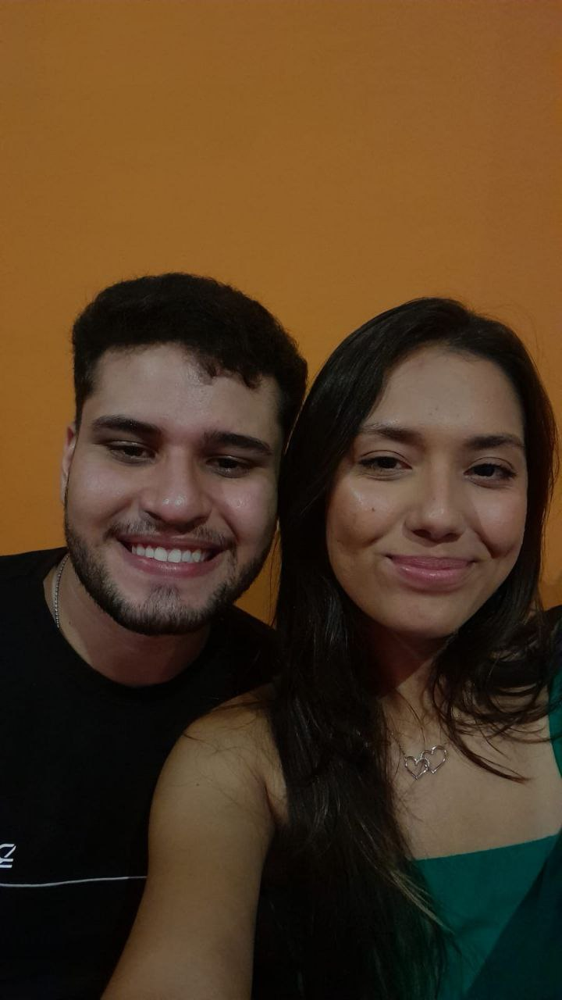
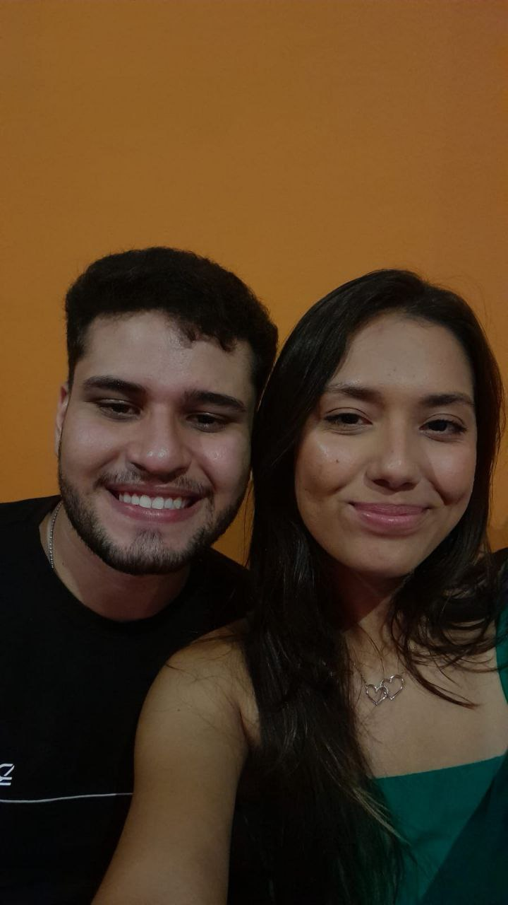

Dê um play, para ver um pouco da nossa história!
Nosso Amor em Momentos

O nosso primeiro registro juntos, tomando aquele sorvete (que por sinal foi melhor do que imaginei). Ali começava o registro de uma grande história. Local: KI AÇAI.

Outro registro em uma loja de sorvete. Fazer o quê, né? Se ela é doidinha por açúcar. Hihihihi. Local: KI AÇAI.
 

Pera, outro local de açúcar? Tá errado isso, só pode! KKKK. Um dia incrível e inexplicável com palavras. Comemos comidas gostosas, tiramos algumas fotinhas e aproveitamos o local. Local: Consulado Café.

Ainda no mesmo dia das fotos acima.Este foi o momento em que trocamos alianças, marcando um novo passo na nossa jornada! Um dos momentos mais felizes e de muito nervosismo. Após um filminho e troca de presentes, esse dia foi mais do que especial, foi indescritível. Local: Dentro do carro ao lado do North.

TÁ AI UM ROLÊ QUE NUNCA PENSEI QUE IRIA SAIR! Uma corridinha de 2400m (só para constar, eu parei nos 2300 metros porque já estava morrendo), mas não disse nada, vai que, né? Ia ser zoado pela eternidade. Hihihihi. Local: Calçadão do Icaraí.

Esse dia será inesquecível: o dia do nosso rolê cultural. 1º -> Eletricidade, 2º -> Café, 3º -> Pinacoteca, 4º -> Alguma coisa tropical, 5º -> Trem. Um dia mais do que especial, em que praticamente passamos o dia juntos. Foi incrível. Onde vimos muitas obras de arte, julgamos horrores e rimos muito. LOCAL: Museu da Indústria e Pinacoteca.
Considerações Finais:
Achou que era o final? Aqui será onde o final se torna o começo. Este será o nosso álbum. Irei eternizar todos os nossos momentos aqui, para que nunca se percam com o tempo, e para que esses momentos incríveis possam sempre ser relembrados. Agradeço todos os dias por ter encontrado uma pessoa tão incrível quanto você. Que possamos cada vez mais preencher esse álbum. Eu te amo muito. Beijos.
Arthur & Anayrda